Agents And Their Factions!
Here are the names and Factions to where each playabale Agents belong too!
Cunning Hares
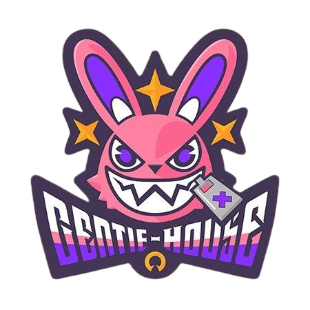"The Cunning Hares are always available for the rigth price!"
Gentle House, better known as "Cunning Hares" is a small agency that deals with comissions relating to hollows. In this agency the teams consists of Nicole, Anby, Billy kid, and their newly recruit member Nekomata!
.png)
.png)
.png)
Belovog Heavy Industries
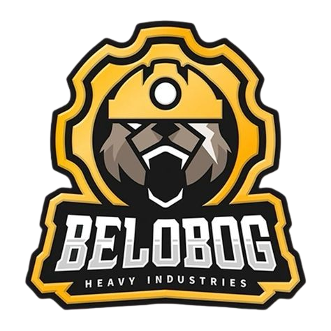"Our goal is not to build a house, But a Home."
Belobog Heavy Industries is a construction company that uses advanced machines to complete projects in dangerous environments. In this agency the teams consists Koleda, Ben, Anton, and Grace.
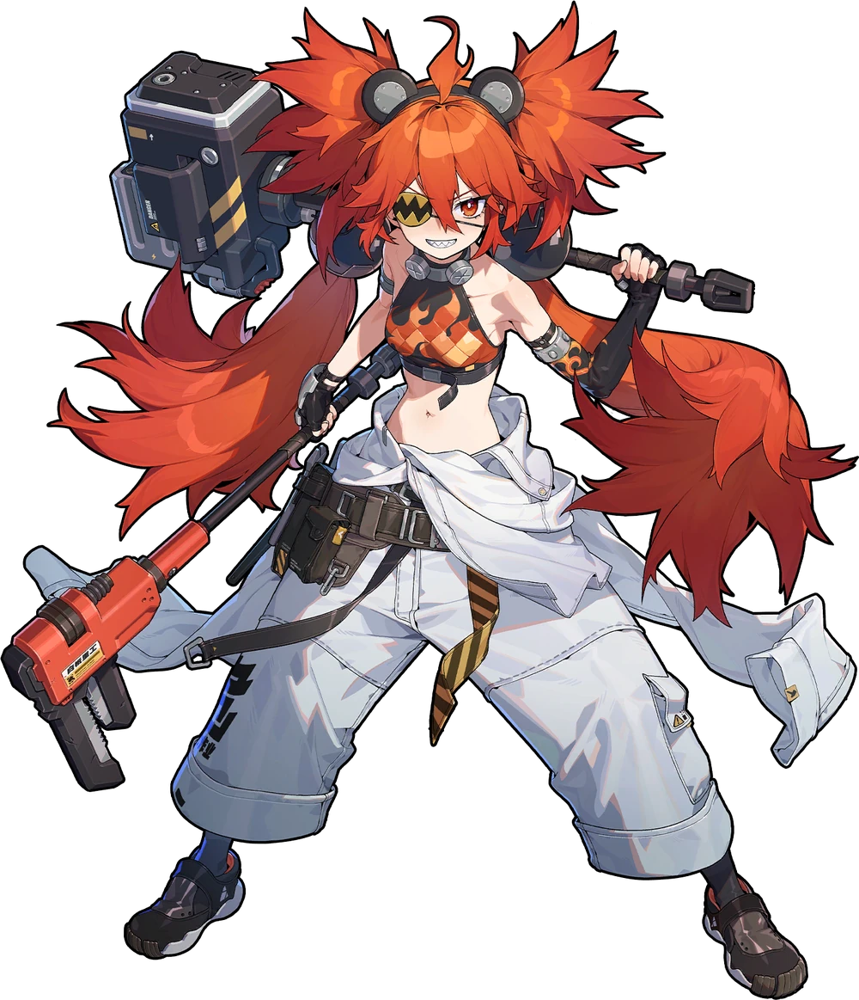 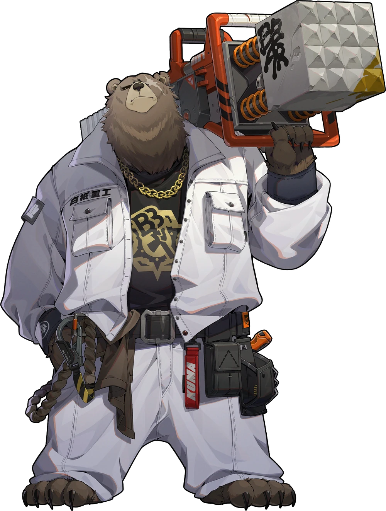 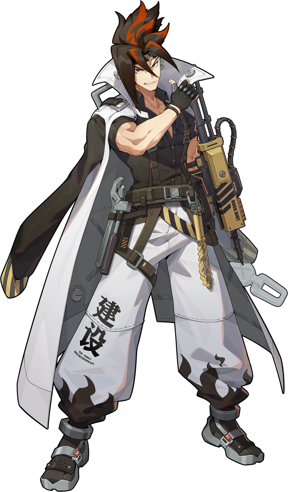 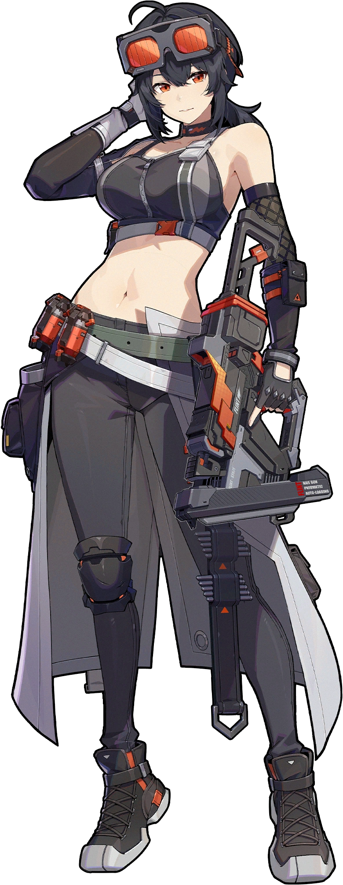Victoria House Keeping Co.
"Thank you for using Victoria Housekeeping. Your wish is our command"
Victoria House Keeping Co. is a company that provides various high-quality services. Their outfits were inspired by old-school domestic helpers, such as butlers and maids. In this company the teams consist of Rina, Lycoan, Corin and Ellen.
.png) 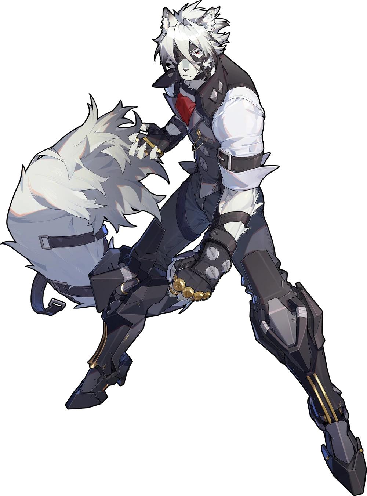
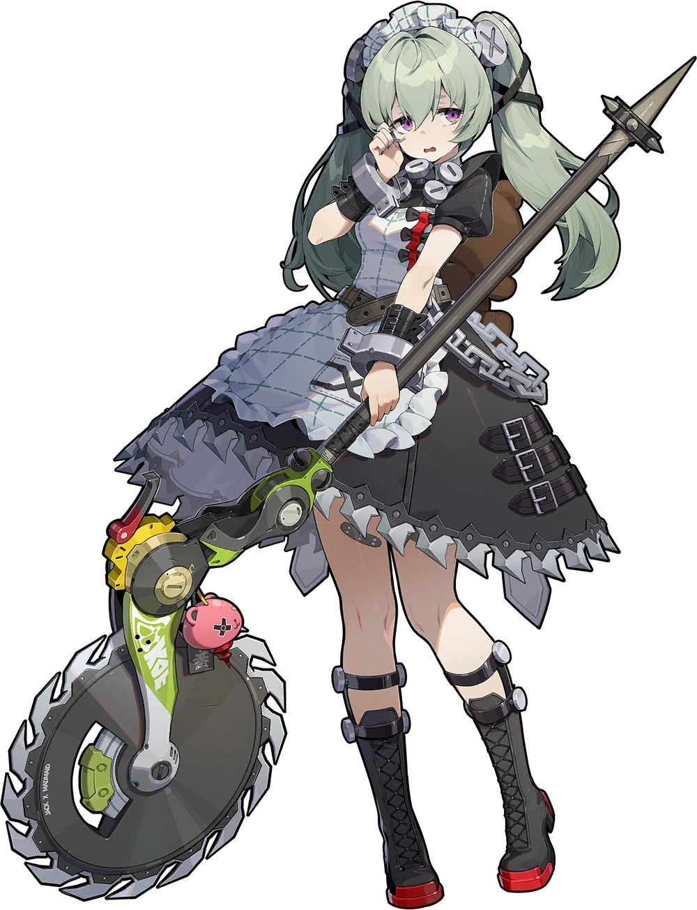
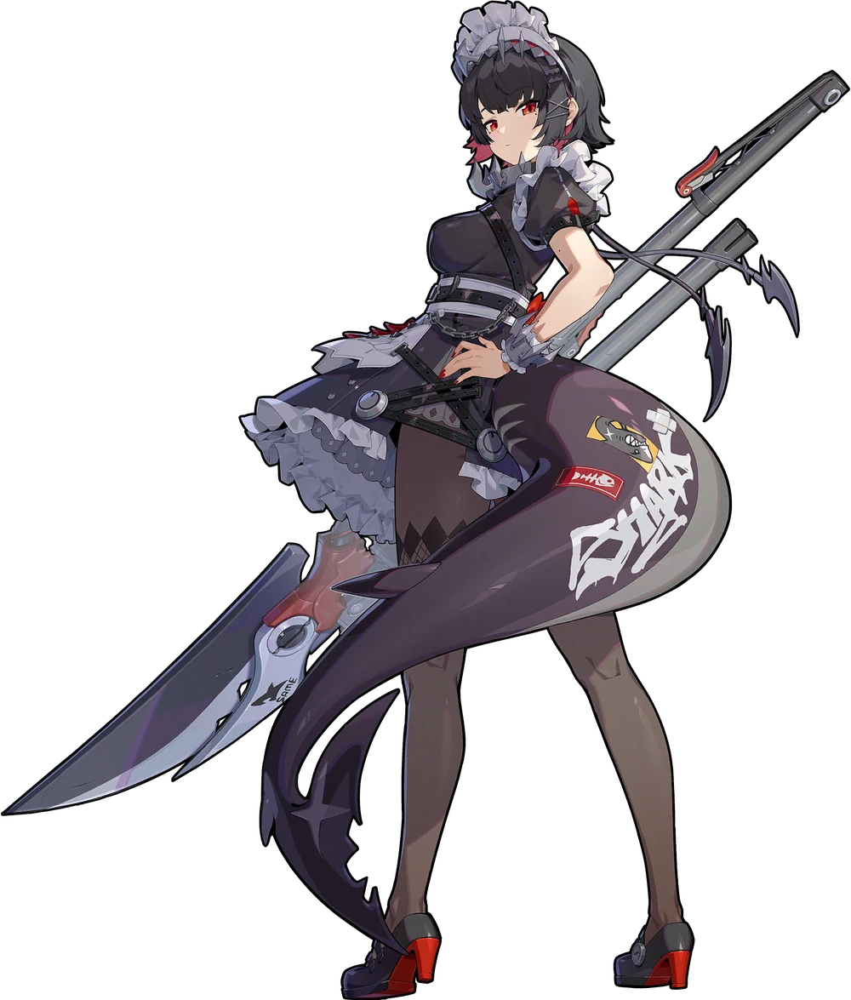
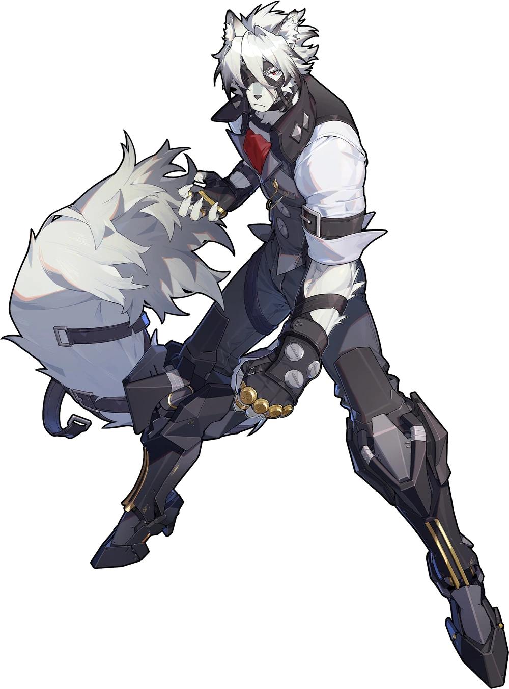
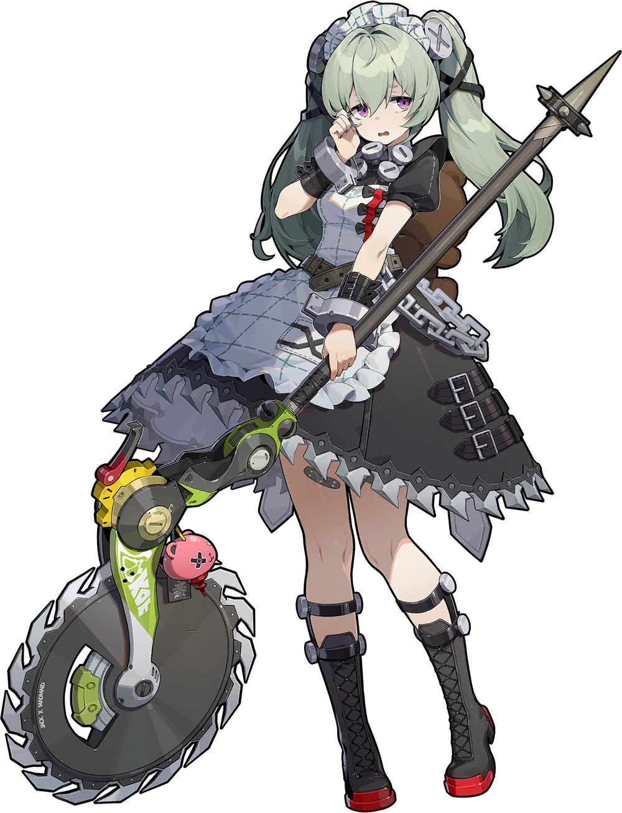
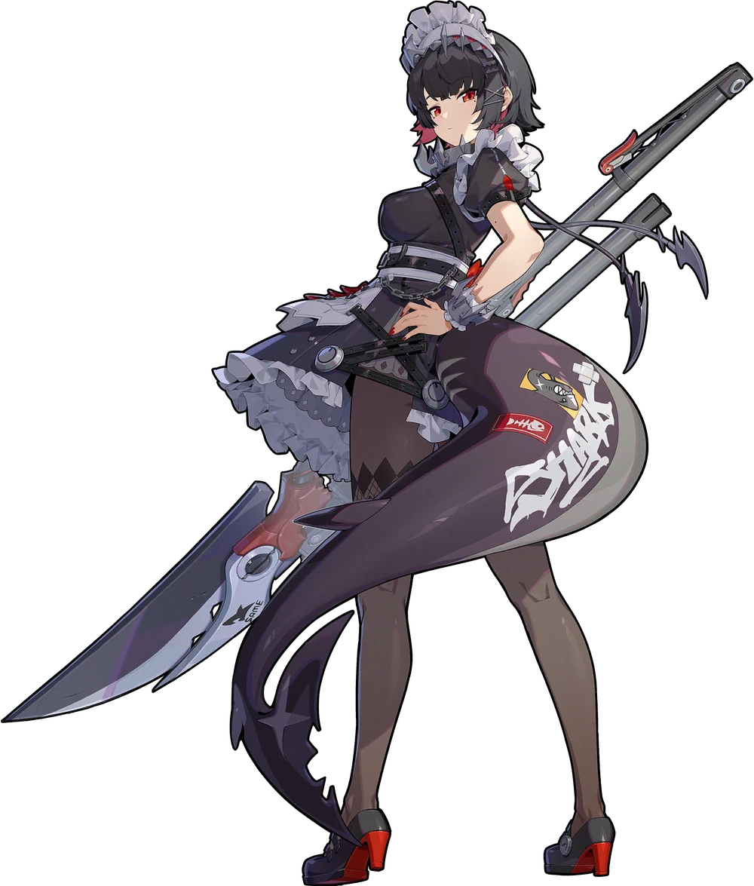
Hollow Special Operation Section 6 (H.S.O.S.6)
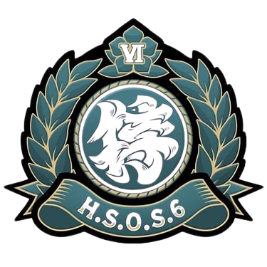"Eradicate Evil-we decide for ourselves what 'evil' is."
The Hollow Special Operation Section 6 is an armed force that consists of talented individuals outfitted with cutting-edge technology. They are tasked to undergo dangerous missions in Hollow-related areas. In this team Soukako, Miyabi (their leader), Asaba, Yanagi are currently the only two known members.
Sons Of Calydon
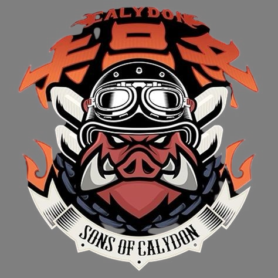"Welcome to the Other Ring. May you rise from the ashes!"
Sons of Calydon is a biker gang that lives on the Outer Ring of New Eridu, led by Caesar King. The Sons of Calydon seem to be inspired by post-apocalyptic wasteland gangs featured in films like Mad Max. Another inspiration is western depictions of biker gangs. The Agents in this team consists of Burnice White, Caesar King, Luciana de Montefio, and Piper Wheel.

New Eridu Public Security (N.E.P.S)
"Save The Trouble and Surrender!"
New Eridu Public Security (NEPS) is a police organization under the New Eridu City Administration tasked with maintaining peace and order within New Eridu. NEPS is responsible for most of New Eridu's administrative and judicial needs. They have branches all over the city, including a major one at NEPS Lumina Branch. The consisting members of this branch are Jane Doe, Qingyi, Seth Lowell, Zhu Yuan.
Obol Squad
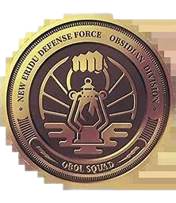"Mission Accomplished."
It is tied to the New Eridu Defense Force Obsidian Division, and Defense Force Sergeant Soldier 11 is the head of the squad and the only Agent that has been showed in the game.
Stars of Lyra
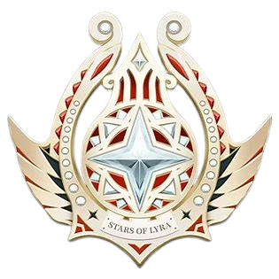"Oh~ We really harmonize!"
Stars of Lyra, they are a famous musical group in New eridu. Lyra is the name of a constellation, It is named after the lyre of Orpheus, a magical instrument from Ancient Greek myth that could charm even the gods. The consisting members of this branch are Astra and Evelyn.